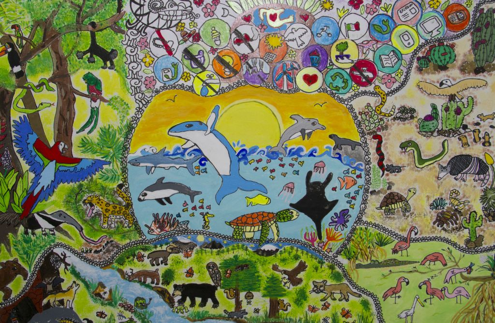
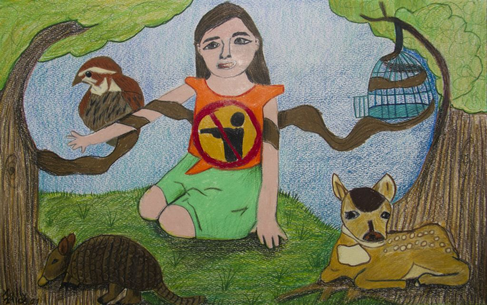
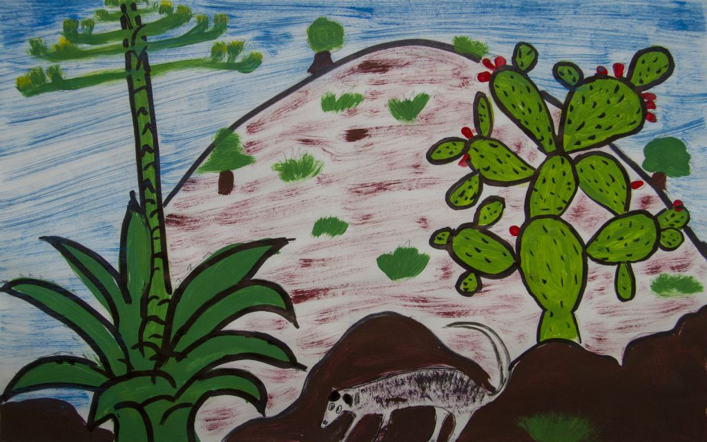
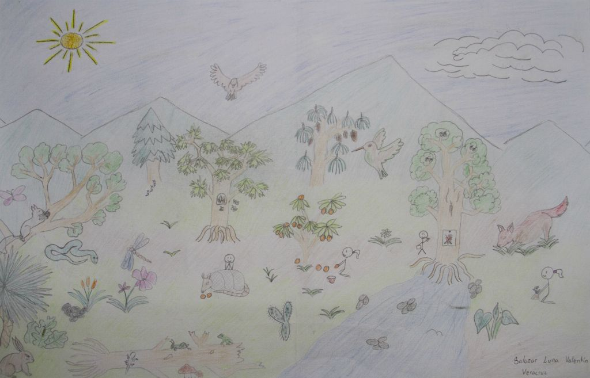

La naturaleza felina mexicana Cristóbal Oropeza Rivera - 12 años - Aguascalientes
Desde el río Hondo Erandi Cedeño Zacarías -12 años - Quintana Roo
Los ecosistemas en donde vivo Sophia Cuevas Hidalgo - 10 años - Morelos
El Jaguar Ariana Karely Gil Lucas - 12 años - Quintana Roo
La laguna y yo Erika C. Anduága Vázquez - 11 años - Quintana Roo
La contaminación Dulce María Soltero Flores - 12 años - Colima
Si amas a México desde sus raíces crecerá de las ramas Flavio Miranda Macedo 12 años - Nuevo León
¡Los animales del sur, también tienen derecho a la naturaleza! Xally Valeria García Sánchez - 10 años - Estado de México
Sembrando la vida José Miguel Bravo Anaya - 12 años - Guerrero
¡¡Buen provecho!! Uriel Abalos López - 12 años - Tabasco
Plantas nativas del desierto Xochitl Orquídea de la Cruz Santiago - 11 años - Baja California
El maguey pulquero y su preservación en la cultura y naturaleza de México Agustín De Silva Lobo - 10 años - Querétaro
Nos alimentamos de naturaleza Santiago Esteban Flores - 12 años - Durango
Un mundo de colores Vicente Rodea Rodríguez - 11 años - San Luis Potosí
Los diversos ecositemas en México Osvaldo Kenai Torres Pulgarín - 12 años - Coahuila
Los ecosistemas donde vivo Dulce Jazmin Angeles Camacho - 11 años - Hidalgo
El camino a la Biósfera "El cielo" Marcelo Nahar Torres Tamborrell - 10 años - Tamaulipas
The mountain green Valentín Salazar Luna - 12 años - Veracruz